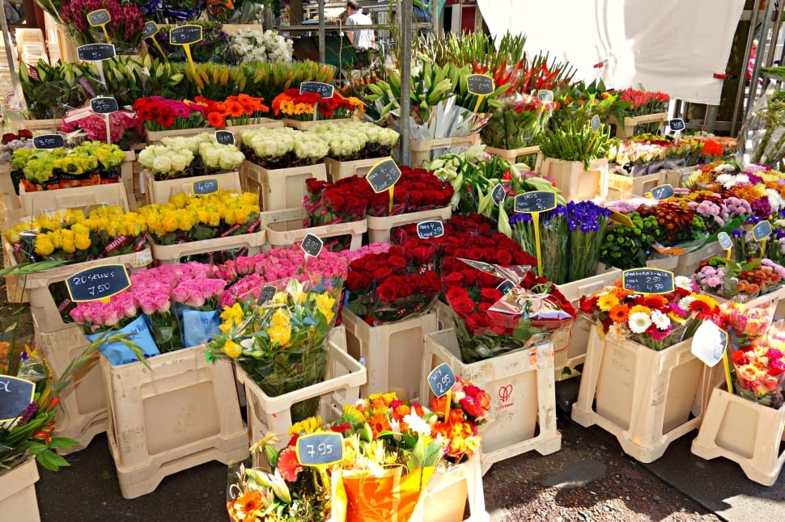
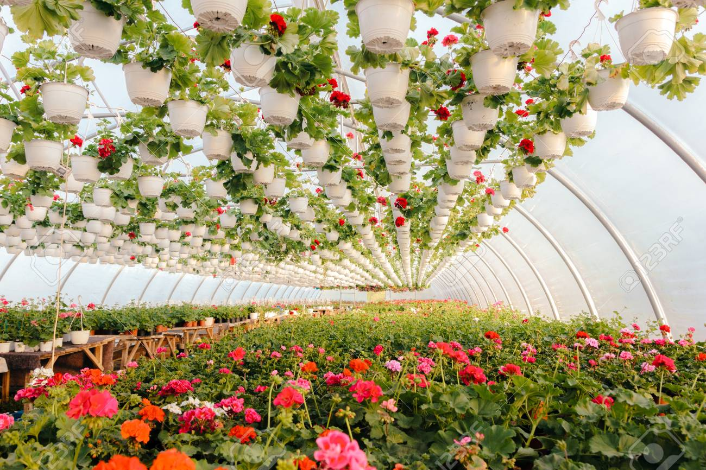
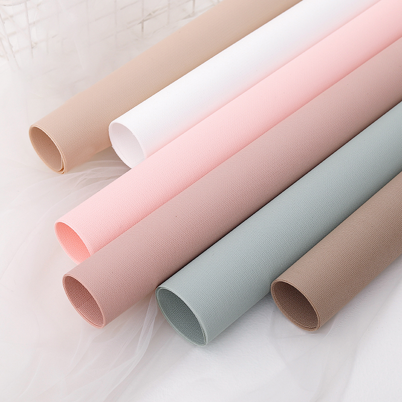

|
Jeta Kajtazi and Jetë Lajçi are the owners and creative directors of Lilium (flowershop). In 2020 they launched Lilium to celebrate the everyday along with special days. True to that aim, their florals have been featured in many famous magazines and blogs. Lilium carries fresh cut flowers, bouquets, dried flower crowns, and a thoughtful selection of vases. |
 |
|  |
|
|  |
Why choose organic wrappings for our flowers?The COC The most notable difference between Organic Cotton and regular cotton is that the cotton is grown without the use of harmful pesticides. Traditional cotton is accountable for almost 25% of all chemical pesticides used in agriculture, and nearly 50% of the textile market uses cotton, which means a LOT of chemicals are seeping into our earth! Inevitably over time this increases green house gases and the likelihood of contamination of the same soil that may grow our children’s, children’s vegetables. We think that is a BIG deal. To be considered 100% organic, our cotton has to meet a very strict approval process. The certifier has approved every step in the process from cotton to the finished goods. The process begins from the time the cotton is grown, to how the cotton is transported to the mill, how it is milled, how it is bleached using oxygen based bleach (non chlorine), how the cotton is printed using Low Impact Dyes, and must also meet a standard of fair working conditions set by the ILO. At the end of the process a certificate is provided to ensure that all of these standards have been met and approved. We believe with proper care, Organic Cotton will actually last longer than traditional cotton because it has not been subject to chemicals such as formaldehyde, and metals, that inevitably alter the quality of the cotton. Most importantly, you can rest assured that the Birch Organic fabrics you are bringing into your home are beautiful, and safe for our planet and your family. |
| 🌼 + 🌼+ 🌼 = 30 |
| 🌼 + 🌹+ 🌹 = 18 |
| 🌼 - 🌸 = 2 |
| 🌸 + 🌼+ 🌹 = ? |
Created by Grupi 45 © 2021 All rights reserved.